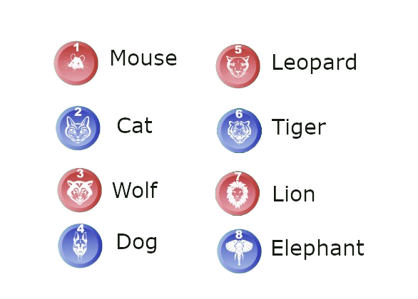

The goal of the game is to move a piece onto an opponent’s base, also called the den.
Each side has eight pieces representing different animals, each with a different rank. Higher ranking pieces can capture all pieces of identical or weaker ranking, with one exception: the mouse may capture the elephant, while the elephant may or may not capture the rat.
The animal ranking, from strongest to weakest, is:
Players alternate moves with White moving first. During their turn, a player must move. Each piece moves one square horizontally or vertically (not diagonally). A piece may not move to its own den.
There are special rules related to the water squares:
Animals capture the opponent pieces by "eating" them. A piece can capture any enemy piece which has the same or lower rank, with some exceptions: